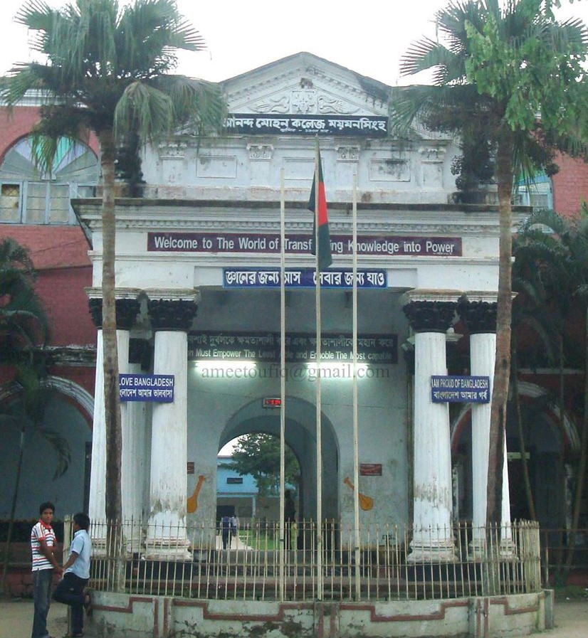
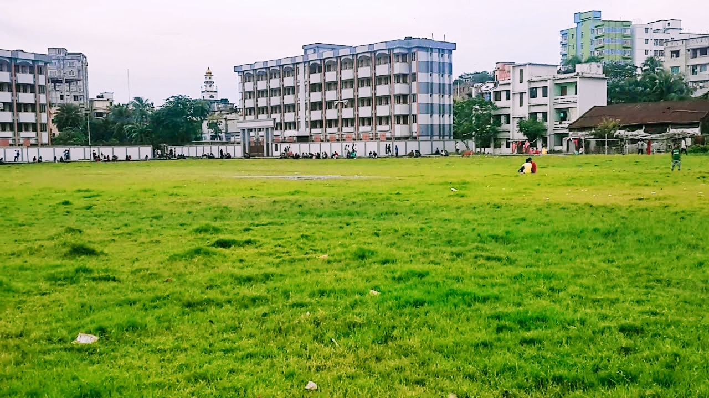
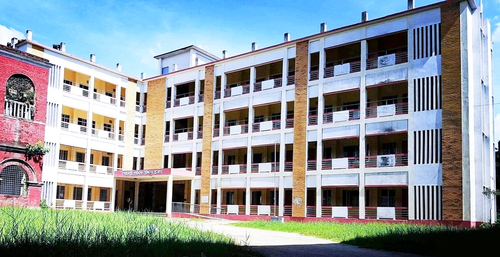
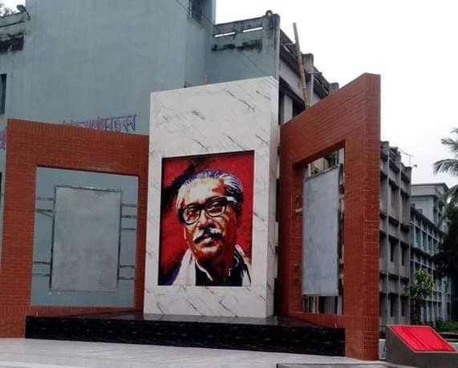
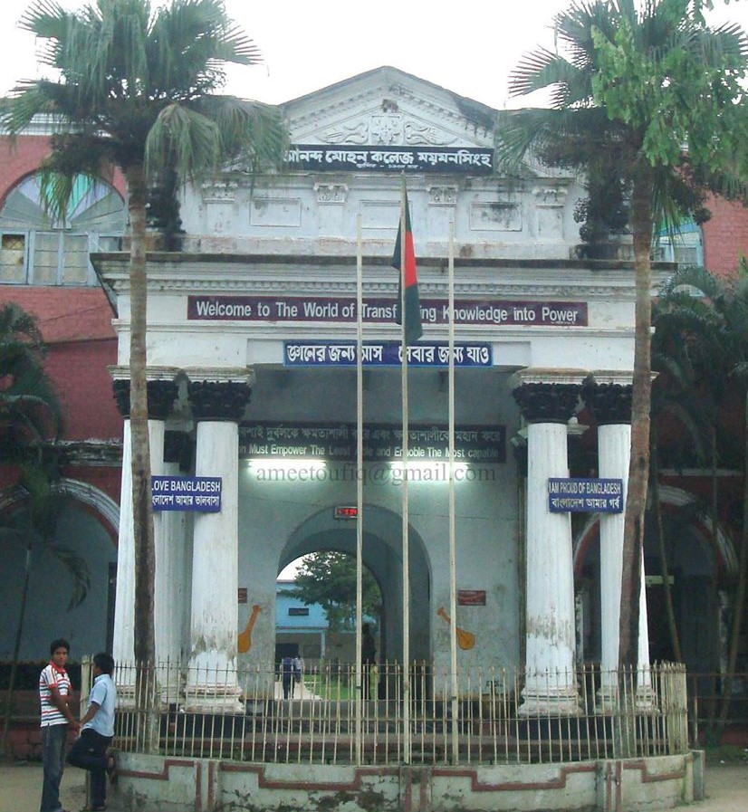
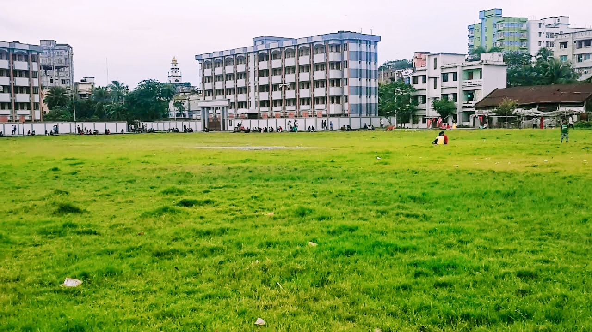
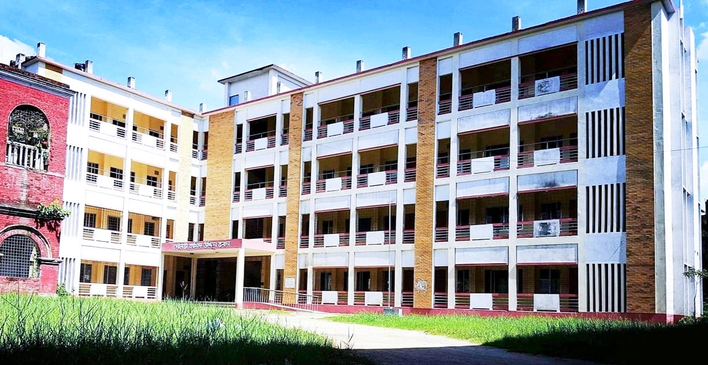
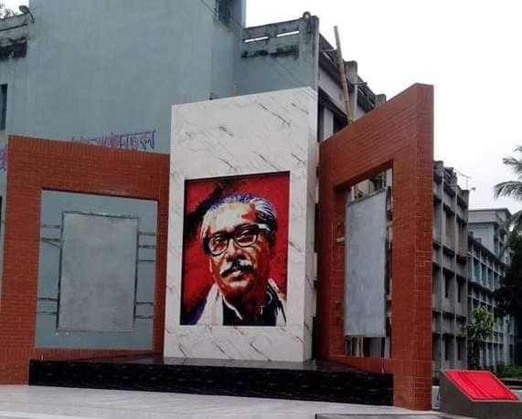

Principal's Speech
I am delighted that Ananda Mohan College is globally connected with the rest of the world through website. Thanks to technological boom and the honorable prime minister of the government of the people’s Republic of Bangladesh Sheikh Hasina for her dedication and commitment to make our country digitalized in every sphere of life, especially in education sector. It is heartening to note that our educational institutions are under the purview of Digital programme. Ananda Mohan College provides all sorts of information regarding academic activities. Now the students can easily get different kinds of information-class routine, library facilities, notice for admission and form fill up, result, various notices and what not. Let the website of Ananda Mohan College be the hub of all academic activities. It will expedite the academic activities and save time and energy. In the true sense Digital Bangladesh means to be able to do everything effectively, meaningfully, punctually and to extend amenities to the door steps of the common people, “Long live Bangladesh”.I am pleased that the website has become the focal point of all academic activities of Ananda Mohan College. I take this opportunity to congratulate all who have contributed meaningfully for the establishment of this unique event in the history of this college.

Vice Principal's Speech
Welcome to Ananda Mohan College, Mymensingh. Topographically the college is located at the heart of Mymensingh city, not too far from old Brahmaputra river. It was established in 1908. The College has been imparting quality education with repute from Higher Secondary to Masters’ level since its inception. We are happy to inform our friends and well wishers at home and abroad that Ananda Mohan College is globally connected through website. The website has ushered a new era in the history of Ananda Mohan College. It paved the way for the modernization of the college. Unlike the earlier forms of instructional technology, the website is likely to play a significant role in promoting higher education. In a world growing smaller every day, the technological reformations are essential both for the spread of education and to foster a spirit of friendship and cooperation. The world has formed a family whose members are now able to communicate to each other in a free and frank manner because of this technological bonanza.I am pleased that the website has become the focal point of all academic activities of Ananda Mohan College. I take this opportunity to congratulate all who have contributed meaningfully for the establishment of this unique event in the history of this college.
At a Glance
Ananda Mohan College, Mymensingh is one of the renowned college in Bangladesh. It was established 1901. Ananda Mohan Bose established this Institution in 1883 in his own family residence at Ram Babu Road. This institution was later renamed City Collegiate School. On 18 July 1901, it introduced a college branch as an affiliate of the Calcutta City College established by the Brahmo Samaj. The college section was closed in 1906 after the death of Ananda Mohan Basu. Two years later, Mr. Blackwood, the district magistrate of Mymensingh took an initiative to reopen the college. In the process, the college was renamed Ananda Mohan College. Professor Baikuntha Kishor Chakravarty was appointed its first principal. The college was affiliated with Calcutta University till 1947. After partition of India, it was affiliated with the university of dhaka. The college was Nationalized in 1963. In the same year, it introduced honours courses in Bangla and History. It was given funding and other support for its expansion, after which it got three two-storied buildings, one auditorium, one students' common room and a library.
The college now runs honours and masters programmes in 20 subjects. These are: Bangla, English, History, Islamic History & Culture, Islamic Studies, Economics, Political Science, Social Welfare, Sociology, Botany, Zoology, Mathematics, Physics, Chemistry, Geography, Accounting and Management. The college campus has a total area of 15.28 acres. New constructions in the campus include residential houses for principal and teachers, a guest house, a martyr's monument, boys' and girls' common rooms, a post-office, a power sub-station, a mosque, a playground and a big pond. The college has five students' hostels, of which one is for girls. It can also boast of a botanical garden and a few laboratories for students of the departments of physics and biological sciences. The college provides transport facilities to its students and teachers. It has units of the Bangladesh National Cadet Core (BNCC) and Rover Scouts run by commissioned teachers. Computer training facilities are also available for students. The college has a welfare trust for poor and talented students. Government Anandamohan College has been enriched by contributions of many notable professors. Many of the college alumni have also made their names at home and abroad. Notable among former students are Dr. Niharranjan Ray (historian), P.C. Sarker (magician), Principal Ibrahim Khan (writer), Syed Waliullah (novelist) and Nirmalendu Goon (poet).